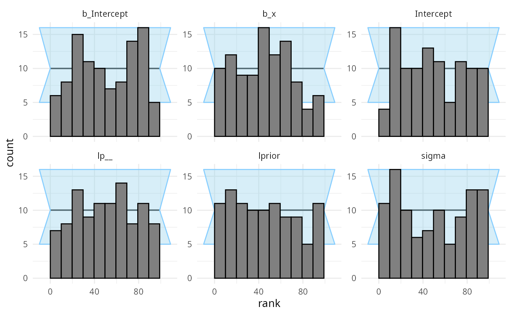
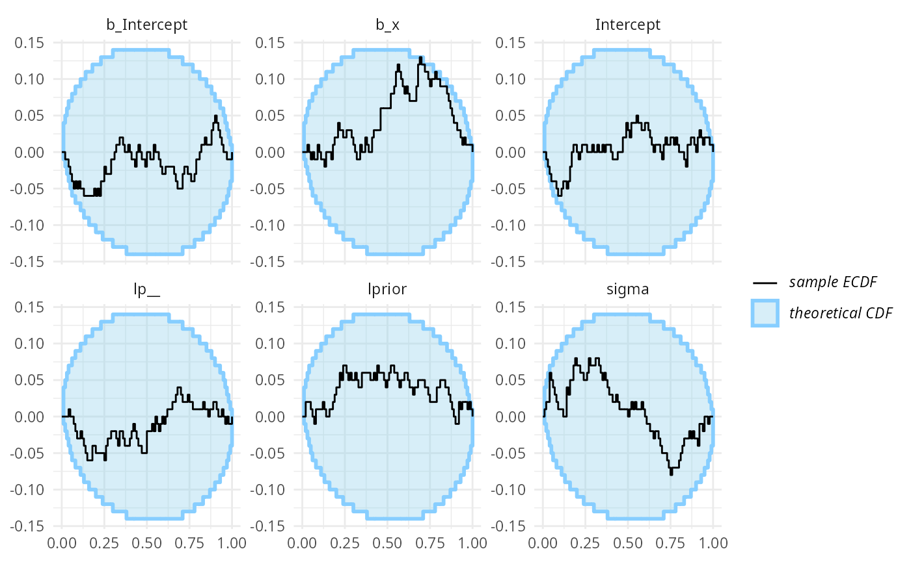
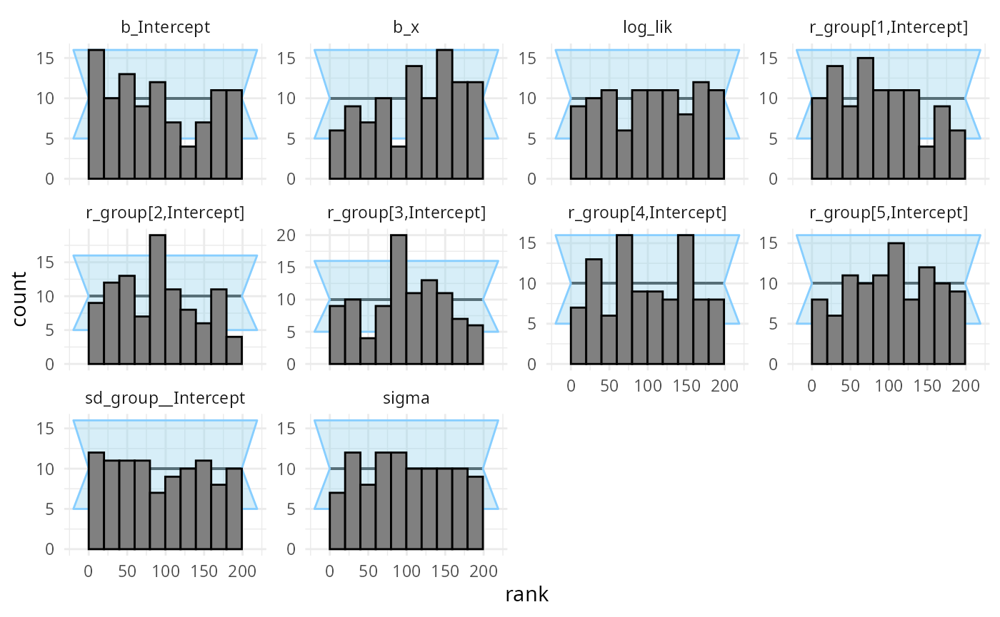
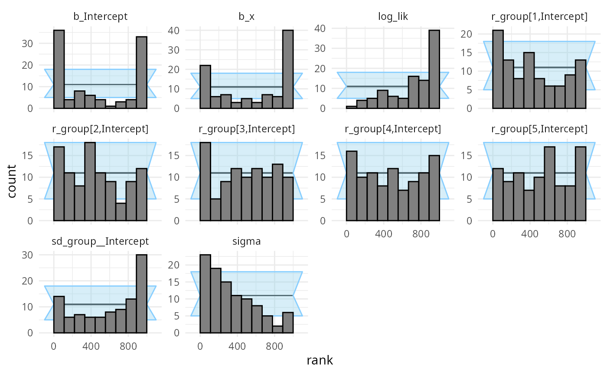
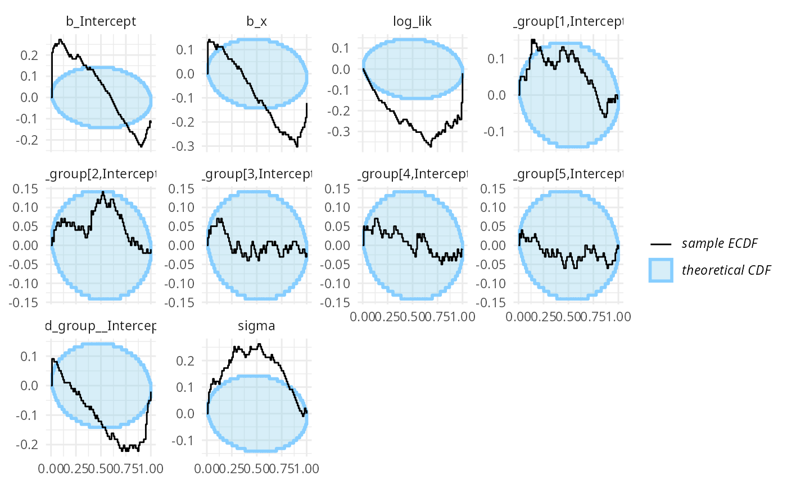
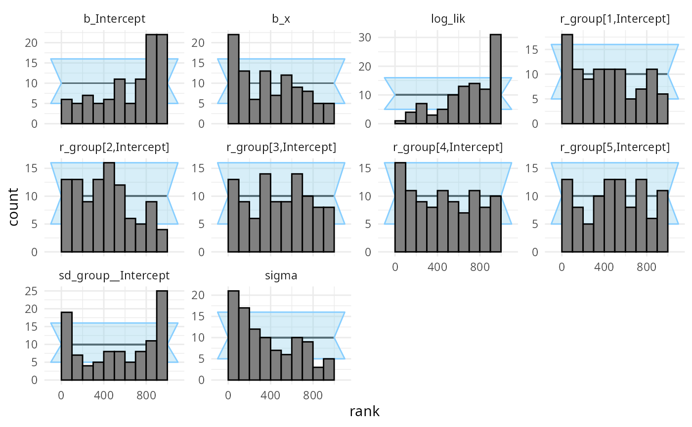
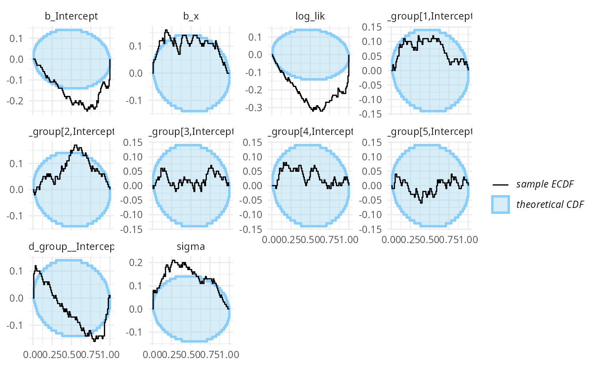

This vignette shows how the SBC package supports brms
models. Let’s setup the environment:
library(SBC)
library(brms)
library(ggplot2)
use_cmdstanr <- getOption("SBC.vignettes_cmdstanr", TRUE) # Set to false to use rstan instead
if(use_cmdstanr) {
options(brms.backend = "cmdstanr")
} else {
options(brms.backend = "rstan")
rstan::rstan_options(auto_write = TRUE)
}
# Using parallel processing
library(future)
plan(multisession)
# The fits are very fast,
# so we force a minimum chunk size to reduce overhead of
# paralellization and decrease computation time.
options(SBC.min_chunk_size = 5)
# Setup caching of results
if(use_cmdstanr) {
cache_dir <- "./_brms_SBC_cache"
} else {
cache_dir <- "./_brms_rstan_SBC_cache"
}
if(!dir.exists(cache_dir)) {
dir.create(cache_dir)
}
theme_set(theme_minimal())
# Run this _in the console_ to report progress for all computations to report progress for all computations
# see https://progressr.futureverse.org/ for more options
progressr::handlers(global = TRUE)Generating data using brms
The brms package has a built-in feature to simulate from
prior corresponding to the model via the
sample_prior = "only" option. This is a bit less useful in
model validation as bug in brms (or any mismatch between
what brms does and what we think it does) cannot
be found as it will most likely affect the generator and the backend in
the same way. Still this can be useful for validating brms
itself - we’ll get to validation with custom generators in a while. For
now, we’ll build a generator using brms directly.
Generating simulations with this generator requires us to compile a Stan model and may thus take a while. Also the exploration is often problematic, so to avoid problems, we take a lot of draws and thin the resulting draws heavily.
# We need a "template dataset" to let brms build the model.
# The predictor (x) values will be used for data generation,
# the response (y) values will be ignored, but need to be present and
# of the correct data type
set.seed(213452)
template_data = data.frame(y = rep(0, 15), x = rnorm(15))
priors <- prior(normal(0,1), class = "b") +
prior(normal(0,1), class = "Intercept") +
prior(normal(0,1), class = "sigma")
generator <- SBC_generator_brms(y ~ x, data = template_data, prior = priors,
thin = 50, warmup = 10000, refresh = 2000,
out_stan_file = file.path(cache_dir, "brms_linreg1.stan")
)
set.seed(22133548)
datasets <- generate_datasets(generator, 100)## Running MCMC with 1 chain...
##
## Chain 1 Iteration: 1 / 15000 [ 0%] (Warmup)
## Chain 1 Iteration: 2000 / 15000 [ 13%] (Warmup)
## Chain 1 Iteration: 4000 / 15000 [ 26%] (Warmup)
## Chain 1 Iteration: 6000 / 15000 [ 40%] (Warmup)
## Chain 1 Iteration: 8000 / 15000 [ 53%] (Warmup)
## Chain 1 Iteration: 10000 / 15000 [ 66%] (Warmup)
## Chain 1 Iteration: 10001 / 15000 [ 66%] (Sampling)
## Chain 1 Iteration: 12000 / 15000 [ 80%] (Sampling)
## Chain 1 Iteration: 14000 / 15000 [ 93%] (Sampling)
## Chain 1 Iteration: 15000 / 15000 [100%] (Sampling)
## Chain 1 finished in 0.1 seconds.## Warning: Some rhats are > 1.01 indicating the prior was not explored well.
## The highest rhat is 1.05 for b[1]
## Consider adding warmup iterations (via 'warmup' argument).Now we’ll build a backend matching the generator (and reuse the compiled model from the generator)
backend <- SBC_backend_brms_from_generator(generator, chains = 1, thin = 1,
warmup = 500, iter = 1500,
inits = 0.1)
# More verbose alternative that results in exactly the same backend:
# backend <- SBC_backend_brms(y ~ x, template_data = template_data, prior = priors, warmup = 500, iter = 1000, chains = 1, thin = 1
# init = 0.1)Compute the actual results
results <- compute_SBC(datasets, backend,
cache_mode = "results",
cache_location = file.path(cache_dir, "first"))## Results loaded from cache file 'first'## - 15 (15%) fits had at least one Rhat > 1.01. Largest Rhat was 1.017.## - 56 (56%) fits had some steps rejected. Maximum number of rejections was 1.## Not all diagnostics are OK.
## You can learn more by inspecting $default_diagnostics, $backend_diagnostics
## and/or investigating $outputs/$messages/$warnings for detailed output from the backend.There are some problems, that we currently choose to ignore (the highest Rhat is barely above the 1.01 threshold, so it is probably just noise in Rhat computation).
So we can inspect the rank plots. There are no big problems at this resolution.
plot_rank_hist(results)
plot_ecdf_diff(results)
Using custom generator code
Let’s take a bit more complex model - a linear regression with a single varying intercept.
This time we will not use the brms model to also
simulate from prior, but simulate using an R function. This way, we get
to learn if brms does what we think it does!
Custom generator code also allows us to have different covariate values for each simulation, potentially improving sensitivity if we want to check the model for a range of potential covariate values. If on the other hand we are interested in a specific dataset, it might make more sense to use the predictors as seen in the dataset in all simulations to focus our efforts on the dataset at hand.
The data can be generated using the following code - note that we
need to be careful to match the parameter names as brms
uses them. You can call parnames on a fit to see them.
one_sim_generator <- function(N, K) {
# N - number of datapoints, K number of groups for the varying intercept
stopifnot(3 * K <= N)
x <- rnorm(N) + 5
group <- sample(1:K, size = N, replace = TRUE)
# Ensure all groups are actually present at least twice
group[1:(3*K)] <- rep(1:K, each = 3)
b_Intercept <- rnorm(1, 5, 1)
b_x <- rnorm(1, 0, 1)
sd_group__Intercept <- abs(rnorm(1, 0, 0.75))
r_group <- matrix(rnorm(K, 0, sd_group__Intercept),
nrow = K, ncol = 1,
dimnames = list(1:K, "Intercept"))
sigma <- abs(rnorm(1, 0, 3))
predictor <- b_Intercept + x * b_x + r_group[group]
y <- rnorm(N, predictor, sigma)
list(
variables = list(
b_Intercept = b_Intercept,
b_x = b_x,
sd_group__Intercept = sd_group__Intercept,
r_group = r_group,
sigma = sigma
),
generated = data.frame(y = y, x = x, group = group)
)
}
n_sims_generator <- SBC_generator_function(one_sim_generator, N = 18, K = 5)For increased sensitivity, we also add the log likelihood of the data
given parameters as a derived quantity that we’ll also monitor (see the
limits_of_SBC
vignette for discussion on why this is useful).
log_lik_dq_func <- derived_quantities(
log_lik = sum(dnorm(y, b_Intercept + x * b_x + r_group[group], sigma, log = TRUE))
)
set.seed(12239755)
datasets_func <- generate_datasets(n_sims_generator, 100)This is then our brms backend - note that
brms requires us to provide a dataset
(template_data) that it will use to build the model
(e.g. to see how many levels of various varying intercepts to
include):
priors_func <- prior(normal(0,1), class = "b") +
prior(normal(5,1), class = "Intercept") +
prior(normal(0,5), class = "sigma") +
prior(normal(0,0.75), class = "sd")
backend_func <- SBC_backend_brms(y ~ x + (1 | group),
prior = priors_func, chains = 1,
template_data = datasets_func$generated[[1]],
control = list(adapt_delta = 0.95),
out_stan_file = file.path(cache_dir, "brms_linreg2.stan"))So we can happily compute:
results_func <- compute_SBC(datasets_func, backend_func,
dquants = log_lik_dq_func,
cache_mode = "results",
cache_location = file.path(cache_dir, "func"))## Results loaded from cache file 'func'## - 1 (1%) fits had NA ess_tail.
## This likely means all posterior draws were equal for some variable in some chains.
## If this is expected, mark the variable `possibly_constant_var_attribute()` to suppress this message.## - 31 (31%) fits had at least one Rhat > 1.01. Largest Rhat was 1.485.## - 5 (5%) fits had tail ESS undefined or less than half of the maximum rank, potentially skewing
## the rank statistics. The lowest tail ESS was NA.
## If the fits look good otherwise, increasing `thin_ranks` (via recompute_SBC_statistics)
## or number of posterior draws (by refitting) might help.## - 44 (44%) fits had divergent transitions. Maximum number of divergences was 120.## - 2 (2%) fits had iterations that saturated max treedepth. Maximum number of max treedepth was 488.## - 86 (86%) fits had some steps rejected. Maximum number of rejections was 7.## Not all diagnostics are OK.
## You can learn more by inspecting $default_diagnostics, $backend_diagnostics
## and/or investigating $outputs/$messages/$warnings for detailed output from the backend.So that’s not looking good! Divergent transitions, Rhat problems… And the rank plots also show problems:
plot_rank_hist(results_func)
plot_ecdf_diff(results_func)
It looks like there is a problem affecting at least the
b_Intercept and sigma variables. We may also
notice that the log_lik (log likelihood derived from all
the parameters) is copying the behaviour of the worst behaving variable.
This tends to be the case in many models, so in models with lots of
variables, it can be useful to add such a term as they make noticing
problems easier.
What happened is that brms by default centers all the
predictors, which changes the numerical values of the intercept (but not
other terms). The interaction with the prior than probably also affects
the other variables.
Maybe we don’t want brms to do this — using
0 + Intercept syntax avoids the centering, so we build a
new backend that should match our simulator better
# Using 0 + Intercept also changes how we need to specify priors
priors_func2 <- prior(normal(0,1), class = "b") +
prior(normal(5,1), class = "b", coef = "Intercept") +
prior(normal(0,5), class = "sigma") +
prior(normal(0,0.75), class = "sd")
backend_func2 <- SBC_backend_brms(y ~ 0 + Intercept + x + (1 | group),
prior = priors_func2, warmup = 1000, iter = 2000, chains = 2,
template_data = datasets_func$generated[[1]],
control = list(adapt_delta = 0.95),
out_stan_file = file.path(cache_dir, "brms_linreg3.stan"))Let’s fit the same simulations with the new backend.
results_func2 <- compute_SBC(datasets_func, backend_func2,
dquants = log_lik_dq_func,
cache_mode = "results",
cache_location = file.path(cache_dir, "func2"))## Results loaded from cache file 'func2'## - 4 (4%) fits had at least one Rhat > 1.01. Largest Rhat was 1.047.## - 8 (8%) fits had divergent transitions. Maximum number of divergences was 4.## - 1 (1%) fits had iterations that saturated max treedepth. Maximum number of max treedepth was 1006.## - 96 (96%) fits had some steps rejected. Maximum number of rejections was 13.## Not all diagnostics are OK.
## You can learn more by inspecting $default_diagnostics, $backend_diagnostics
## and/or investigating $outputs/$messages/$warnings for detailed output from the backend.We see that this still results in a small number of mildly
problematic fits, which is enough for our purposes (likely ramping up
adapt_delta even higher would help). The rank plots look
mostly OK:
plot_rank_hist(results_func2)
plot_ecdf_diff(results_func2)
Using variational inference with brms
Currently variational inference is supported only for
cmdstanr brms backend, so this part will be skipped with
rstan backend. We simply pass
algorithm = "meanfield" when building the SBC backend:
backend_func2_meanfield <- SBC_backend_brms(y ~ 0 + Intercept + x + (1 | group),
prior = priors_func2, warmup = 1000, iter = 2000, chains = 2,
template_data = datasets_func$generated[[1]],
algorithm = "meanfield",
out_stan_file = file.path(cache_dir, "brms_linreg3.stan"))And we run SBC:
results_func2_meanfield <- compute_SBC(datasets_func, backend_func2_meanfield,
dquants = log_lik_dq_func,
cache_mode = "results",
cache_location = file.path(cache_dir, "func2_meanfield"))## Results loaded from cache file 'func2_meanfield'## - 1 (1%) fits resulted in an error.## - 12 (12%) of fits did not converge.## Not all diagnostics are OK.
## You can learn more by inspecting $default_diagnostics, $backend_diagnostics
## and/or investigating $outputs/$messages/$warnings for detailed output from the backend.We see a lot of warnings and when we inspect the diagnostic plots, we see that meanfield variational inference doesn’t really work for this model.
plot_rank_hist(results_func2_meanfield)
plot_ecdf_diff(results_func2_meanfield)
What about fullrank variational inference? Let’s try
backend_func2_fullrank <- SBC_backend_brms(y ~ 0 + Intercept + x + (1 | group),
prior = priors_func2, warmup = 1000, iter = 2000, chains = 2,
template_data = datasets_func$generated[[1]],
algorithm = "fullrank",
out_stan_file = file.path(cache_dir, "brms_linreg3.stan"))
results_func2_fullrank <- compute_SBC(datasets_func, backend_func2_fullrank,
dquants = log_lik_dq_func,
cache_mode = "results",
cache_location = file.path(cache_dir, "func2_fullrank"))## Results loaded from cache file 'func2_fullrank'## - 12 (12%) of fits did not converge.## Not all diagnostics are OK.
## You can learn more by inspecting $default_diagnostics, $backend_diagnostics
## and/or investigating $outputs/$messages/$warnings for detailed output from the backend.We once again see a lot of warnings and when we inspect the diagnostic plots, we see that fullrank variational inference is also not well suited here.
plot_rank_hist(results_func2_fullrank)
plot_ecdf_diff(results_func2_fullrank)
This is not so surprising as we know that Stan’s variational inference just isn’t very good. See also the ADVI vignette for plain Stan models.